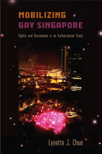

<body bgcolor="#FFFFFF" text="#000000" link="#0000FF" vlink="#CC0000" alink="#CC0000"><center><hr width="350" size="1" align="center" noshade>How gay activism survives in an authoritarian state that maintains power while promoting the rule of law and social harmony<hr width="350" size="1" align="center" noshade><p><a href="https://cdcshoppingcart.uchicago.edu/Cart/ChicagoBook.aspx?ISBN=9781439910313&&PRESS=temple" target="_top">Buy this book!</a> | <a href="https://cdcshoppingcart.uchicago.edu/Cart/Cart.aspx?PRESS=temple" target="_top">View Cart</a> | <a href="https://cdcshoppingcart.uchicago.edu/Cart/Cart.aspx?PRESS=temple" target="_top">Check Out</a></p><p></p></center><!--none//--><h1>Mobilizing Gay Singapore</h1>
<H2>Rights and Resistance in an Authoritarian State</H2>
<h3>Lynette J. Chua</h3>
<P>cloth 1-4399-1031-6 $69.50, Apr 14, <FONT COLOR=#990033>Available</FONT>
<br>paper 1-4399-1032-4 $29.95, Jul 15, <FONT COLOR=#990033>Available</FONT>
<br>Electronic Book 1-4399-1033-2 $29.95 <FONT COLOR=#990033>Available</FONT>
<BR> 228 pp
6x9
4&nbsp;tables 1&nbsp;map(s)
</P><h3 align="center"><P><font color="#996633">Awarded a certificate from the International Convention of Asia Scholar's Book Prize acknowledging it as Ground-Breaking Matter in the Social Sciences category by the 2015 Reading Committee.,
2015</font></P>
<P><font color="#996633">Distinguished Book Award from the Sociology of Law Section of the American Sociological Association,
2015</font></P>
</H3>
<BLOCKQUOTE><I>"How do activists build a movement in an authoritarian society whose laws are designed to suppress dissent? </i>Mobilizing Gay Singapore<i> provides an astute, illuminating, and utterly fascinating analysis of how the legal sophistication, strategic creativity, and sheer courage of gay and lesbian activists in Singapore have enabled them to challenge the heteronormativity of state and society in increasingly bold ways. Chua’s concept of ‘pragmatic resistance’ expands our understanding of the complex interplay of power and dissent under the most inauspicious of circumstances."</i><br>&#151<b>George Chauncey</b>, Samuel Knight Professor of History and American Studies, Yale University, and author of <i>Gay New York</i></I></BLOCKQUOTE>
<P>For decades, Singapore's gay activists have sought equality and justice in a state where law is used to stifle basic civil and political liberties. In her groundbreaking book, <I>Mobilizing Gay Singapore</I>, Lynette Chua asks, what does a social movement look like in an authoritarian state? She takes an expansive view of the gay movement to examine its emergence, development, strategies, and tactics, as well as the roles of law and rights in social processes.
<P>Chua tells this important story using in-depth interviews with gay activists, observations of the movement's activities-including "Pink Dot" events, where thousands of Singaporeans gather in annual celebrations of gay pride-movement documents, government statements, and media reports. She shows how activists deploy "pragmatic resistance" to gain visibility and support, tackle political norms that suppress dissent, and deal with police harassment, while avoiding direct confrontations with the law.
<P><I>Mobilizing Gay Singapore</I> also addresses how these brave, locally engaged citizens come out into the open as gay activists and expand and diversify their efforts in the global queer political movement.
<BR>&nbsp;<h2>Excerpt</h2><P>Excerpt available at <a href="http://www.temple.edu/tempress">www.temple.edu/tempress</a></p>
<BR>&nbsp;<h2>Reviews</h2>
<p><i>"</i>Mobilizing Gay Singapore<i> is a timely and deeply engaging book, demonstrating how rights can be advanced effectively even when the law criminalizes not only homosexuality but also many forms of advocacy. Chua’s rich description of a successful rights movement within an authoritarian state makes a significant contribution to Southeast Asian studies and to the law and society field generally. Her exhaustive ethnographic interviews and careful data analysis exemplify ethnographic fieldwork at its best. </i>Mobilizing Gay Singapore<i> is outstandingly readable, almost addictive. This is an important book that will generate significant interest and attention across a range of disciplines."</i><br>&#151<b>David Engel</b>, SUNY Distinguished Service Professor of Law, State University of New York at Buffalo
<p><i>"[A] very welcome addition to the LGBT literature about South-East Asia.... </i>Mobilizing Gay Singapore<i> fills a void in foreigners’ understanding of gay issues in Singapore. It will remain for some time the standard work on the subject and is a very welcome addition to the LGBT canon."</i> <br>&#151<b><i>The Asian Review of Books</i></b>
<p><i>"The in-depth exploration of a contemporary gay movement in an authoritarian state is a unique contribution to the study of social movements generally and gay rights specifically. The concept and examples of pragmatic resistance also provide a very compelling contrast to how much of the literature discusses political opportunity, resource mobilization, the means of activism, and the place of law and rights in social movements.... Chua's concluding discussion of the nature of law and the politics of rights in Singapore is terrifically compelling and invites pairing with many of the major Americanist texts on law and social movements. Taken collectively, </i>Mobilizing Gay Singapore<i> is an engaging read and a very welcome addition to the literature."</i><br>&#151<b><i>Law & Society Review</i></b>
<BR>&nbsp;<h2>Contents</h2><P>
<p>Preface and Acknowledgments
<br>
<br>1. Mobilizing Gay Rights under Authoritarianism
<br>2. Legal Restrictions, Political Norms, and Being Gay in Singapore
<br>3. Timorous Beginnings
<br>4. Cyber Organizing
<br>5. Transition
<br>6. Coming Out
<br>7. Mobilizing in the Open
<br>8. Pragmatic Resistance, Law, and Social Movements
<br>
<br>Appendix A: Research Design and Methods
<br>Appendix B: Study Respondents: Singapore’s Gay Activists
<br>Appendix C: Singapore’s Gay Movement Organizations and Major Events
<br>Notes
<br>References
<br>Index
</P><BR>&nbsp;<H2>About the Author(s)</H2>
<P><b>Lynette J. Chua</b> is Assistant Professor of Law at the National University of Singapore.</P>
<BR><H2>Subject Categories</H2>
<p><A HREF="/tempress/sexual.html" TARGET="_top">Sexuality Studies/Sexual Identity</a>
<BR><A HREF="/tempress/social.html" TARGET="_top">Community Organizing and Social Movements</a>
<BR><A HREF="/tempress/asian.html" TARGET="_top">Asian Studies</a>
</p>
<BR><h2 class="inpageheading">In the series</H2>
<P><I><a href="http://www.temple.edu/tempress/sexual_studies.html" onMouseOver="window.status='Click for other books in this series!'; return true;" onMouseOut="window.status=''; return true;" target="_top">Sexuality Studies</a></i>, edited by Janice Irvine and Regina Kunzel.
</p><p><i>Sexuality Studies</i>, edited by Janice Irvine and Regina Kunzel, features work in sexuality studies broadly construed, in its social, cultural, and political dimensions, and in both historical and contemporary formations. The series includes titles located within disciplinary and interdisciplinary frames that combine theoretical methodologies with empirical research.</p>
<p align="center"><a href="https://cdcshoppingcart.uchicago.edu/Cart/ChicagoBook.aspx?ISBN=9781439910313&&PRESS=temple" target="_top">Buy this book!</a> | <a href="https://cdcshoppingcart.uchicago.edu/Cart/Cart.aspx?PRESS=temple" target="_top">View Cart</a> | <a href="https://cdcshoppingcart.uchicago.edu/Cart/Cart.aspx?PRESS=temple" target="_top">Check Out</a></p><p><font face="Arial" size="1"><a href="copyright.html" onMouseOver="window.status='Web Copyright Policy';return true;" onMouseOut="window.status=''" title="Web Copyright Policy">&copy;</a> 2015 <a href="http://www.temple.edu" target="new" onMouseOver="window.status='Link to Temple University home page';return true;" onMouseOut="window.status=''" title="Link to Temple University home page">Temple University</a>. All Rights Reserved. http://www.temple.edu/tempress/titles/2274_reg.html</font></p>